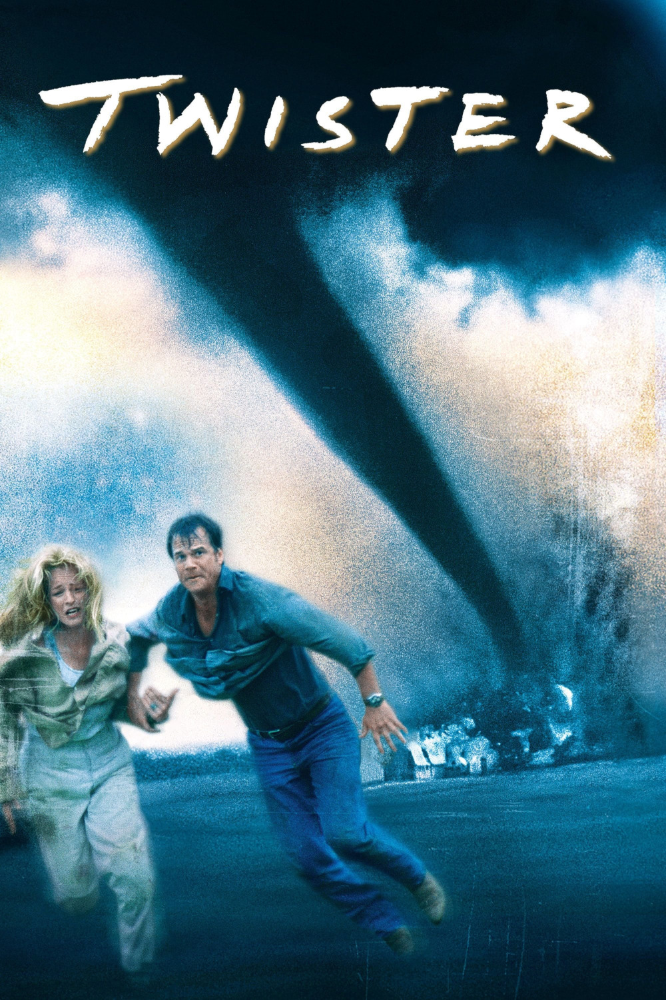

Мировая премьера: 10 мая 1996
Слоган: Тёмная сторона природы.
Сюжет: Учёные-метеорологи Джо и Билл Хардинг, переживающие непростой период в отношениях, вновь объединяются, чтобы испытать "Дороти" – новейшее устройство для исследования торнадо. Запустив внутрь смерча специальные датчики, они надеются собрать данные, которые помогут создать более эффективную систему раннего оповещения. Но ради этого им предстоит перехватить самый разрушительный торнадо, обрушившийся на США за последние полвека, – гигантский смерч шириной более полутора километров, несущийся со скоростью 500 километров в час и сметающий всё на своём пути. Начинается опасная гонка со стихией!
Режиссёр: Ян Де Бонт
Серия: Смерч
В ролях: Хелен Хант, Билл Пэкстон, Джейми Герц
| Хелен Хант | Доктор Джо Хардинг |
| Билл Пэкстон | Билл Хардинг |
| Джейми Герц | Доктор Мелисса Ривс |
| Филип Сеймур Хоффман | Дастин "Дасти" Дэвис |
| Кэри Элвес | Доктор Джонас Миллер |
| Лоис Смит | Мег Грин |
| Алан Рак | Роберт "Кролик" Нурик |
| Тодд Филд | Тим "Бельцер" Льюис |
| Джереми Дэвис | Брайан Лоренс |
| Зак Гренье | Эдди |
| Скотт Томсон | Джейсон "Причер" Роу |
| Джои Слотник | Джоуи |
| Абрахам Бенруби | Бубба |
| Джейк Бьюзи | Лаборант мобильной лаборатории |
Бюджет: $ 92 млн.
Кассовые сборы в США: $ 242 млн.
Кассовые сборы в мире: $ 495 млн.
Продолжительность: 1 ч. 46 мин.
Рейтинг: 6.6